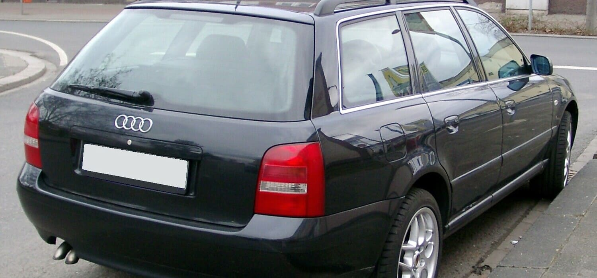
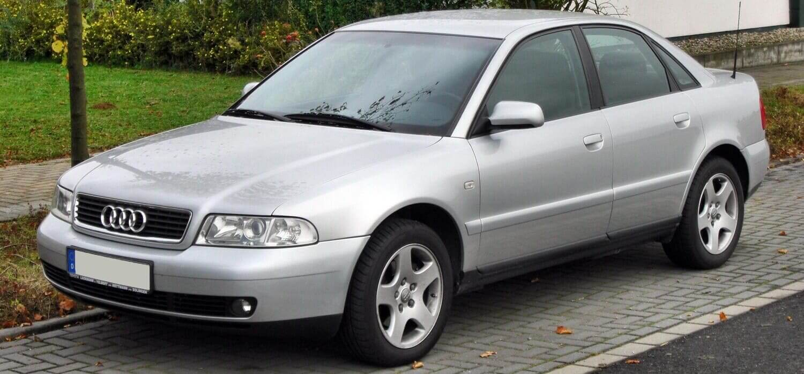

Historia modelu od 1994 roku do dzisiaj.
Audi A4 I został zaprezentowany po raz pierwszy w 1994 roku. Pierwsze wcielenie A4 zyskało kod fabryczny B5. Bazą do jego stworzenia była nowa płyta podłogowa grupy VAG oznaczona PL45 (od 1996 roku zastosowana również w Volkswagenie Passacie B5). Nowością było użycie skrzyni biegów Tiptronic, która pozwalała na wybór manualnego lub automatycznego trybu pracy. W 1996 roku zadebiutowała wersja kombi Audi A4 nazwana A4 Avant. W 1999 roku Audi A4 przeszło drugi i tym razem dużo większy lifting. W 2000 roku model przeszedł kolejną modernizację, w sprzedaży były juz tylko jednostki silnikowe nowe nie występujące wcześniej. W 2000 roku miał miejsce rynkowy debiut RS4, wersji kombi z silnikiem o mocy 380 KM. W plebiscycie na Europejski Samochód Roku 1996 model zajął 3. pozycję (za Fiatem Bravo/Brava i Peugeotem 406).
 Segment:
D
Typy nadwozia:
4-drzwiowy sedan
5-drzwiowe kombi
Skrzynia biegów:
5-biegowa manualna
4-biegowa automatyczna
Napęd:
przedni
quattro
Długość:
sedan: 4520 mm
kombi: 4488 mm
Szerokość:
1733 mm
Wysokość:
sedan: 1415 mm
kombi: 1440 mm
Rozstaw osi:
napęd przedni: 2615 mm
quattro: 2607 mm
Masa własna:
1200 – 1540 kg
Zbiornik paliwa
napęd przedni: 62 l
quattro: 60 l
Liczba miejsc:
5
Test Euro NCAP:
4 gwiazdki
Bagażnik:
sedan: 440 l
kombi: 390 – 1250 l